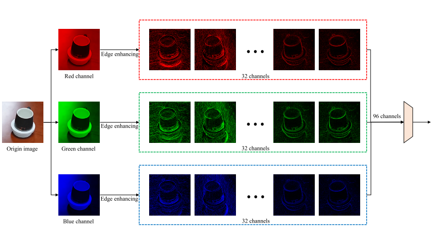

Physical Invisible Backdoor Based on Camera Imaging
（ 2023.09.14 CVPR 23 ）
Yusheng Guo，Nan Zhong，Zhenxing Qian*，Xinpeng Zhang*
School of Computer Science, Fudan University
Key Laboratory of Culture & Tourism Intelligent Computing, Fudan University Shanghai, China
所属类别：Dirty - Label | Sample-Agnostic | Digital&Physical Attack | Single Trigger Attack
推荐阅读指数：❤❤❤❤❤
简介
采用相机指纹作为触发器，无需对原始图片做任何修改。设计CFEB模块来提取相机指纹特征，
并结合EFRB模块一起增强教师网络的的能力，最后通过知识蒸馏技术将教师网络架构转移到学生网络中。
亮点
亮点1：从相机识别研究中获取到灵感，采用相机指纹作为触发器，从而无需对图片做任何修改。
从相机识别研究中获取到灵感，设计良好的神经网络可以提取图像中与相机相关的特征，即相机指纹。
这种相机指纹功能提供了注入后门的理论可能性。相机成像的过程如下：
其中透镜捕获从物体反射的全光谱光，由Bayer滤波器滤波以生成RAM格式的图像。RAM图像经历Bayer去马赛克以将其转换为三通道RGB图像，
然后经历伪色去除、JPEG压缩和其他图像处理步骤以生成JPEG格式图像。然而，由于技术和材料的限制，大多数相机硬件都存在一些缺陷，
这些缺陷会在捕获的图像上留下独特的硬件相关伪影。此外，不同的相机使用不同的拜耳去马赛克算法和图像处理操作。
因此，即使在相同的角度和照明条件下拍摄，不同相机拍摄的同一物体的图像也具有不同的相机指纹。
亮点2：精心设计了两个模块CFEB和EFRB，使得教师网络能够更好地提取相机指纹特征。
先放一张整体流程的图，把结构理清：
由于相机指纹难以用传统的模型提取，文中首先提出了Camera Fingerprint extraction block（CFEB）模块，其组成成分TFDB的结构如下所示：
相机识别模型由CFEB、卷积块和协方差池化层组成。CFEB的输出是从输入图像中提取的相机指纹特征，随后将其馈送到卷积块中进行处理。
利用协方差池化层进一步处理所得到的输出以降低特征表示的维度。得到的特征向量用作关于图像的相机的分类信息。
（CFEB模块和协方差池化层的细节有的地方我也没怎么理解，有兴趣的去文中研究一下吧！）
之后，在作者构建的中毒数据集（包含用不同相机拍摄的不同类别的图片）上训练教师网络，使其能够既能学习相机指纹特征，又能实现
分类功能。考虑到虽然CFEB能够提取相机指纹特征来触发后门，但在提取图像的语义信息方面可能表现不佳，这将导致模型在良性样本上的性能下降。因此文中又引入了
EFRB模块，EFRB模块不仅保证了模型识别良性样本的能力，还增强了其提取相机指纹的能力。其结构如下：

这样子就可以在教师模型中植入后门，但在相机指纹提取过程中也损失了部分图像语义信息，导致了原始任务性能的下降。
此外，由于没有采用传统的分类模型结构，文中又利用模型蒸馏技术将教师网络的能力迁移到传统的分类模型中，使得传统的分类网络也具有识别相机指纹的能力。
我认为这篇文章的亮点就在于它把触发器从样本上分离了，从而不用对原始的图片做任何修改，可以说实现了中毒样本100%的隐蔽性，
但同时也将攻击者的权限扩大了，攻击者不仅可以访问数据集，也可以控制模型的训练过程，因此它的实用性也会大打折扣！但是这篇文章在我看来，还是非常值得阅读的。
总结
最后简单总结分类一下，这篇文章是明显的“Dirty-Label”、“Single Trigger Attack”攻击方法，
由于触发器是一个固定的相机指纹，因此可以归类为“Sample-Agnostic”攻击方法。
此外，利用相机指纹作为触发器在物理世界中可以很轻松的部署，只需要用某部相机去拍摄即可，因此很明确地分类为“Digital Attack”攻击方法。